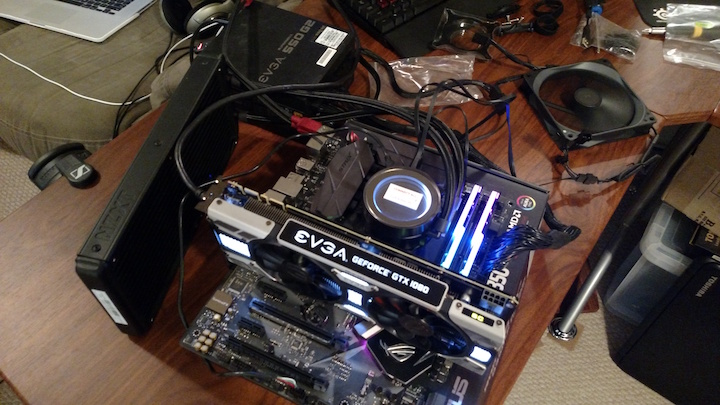

POSTing
It's a REALLY good idea to assemble everything outside of the case first and try to get it to POST (Power On Self Test). There were a couple hiccups like forgetting to power the CPU and GPU as seen here. There should be cables connecting to the GPU to the motherboard just above the CPU water pump (circular glass piece with the sticker).